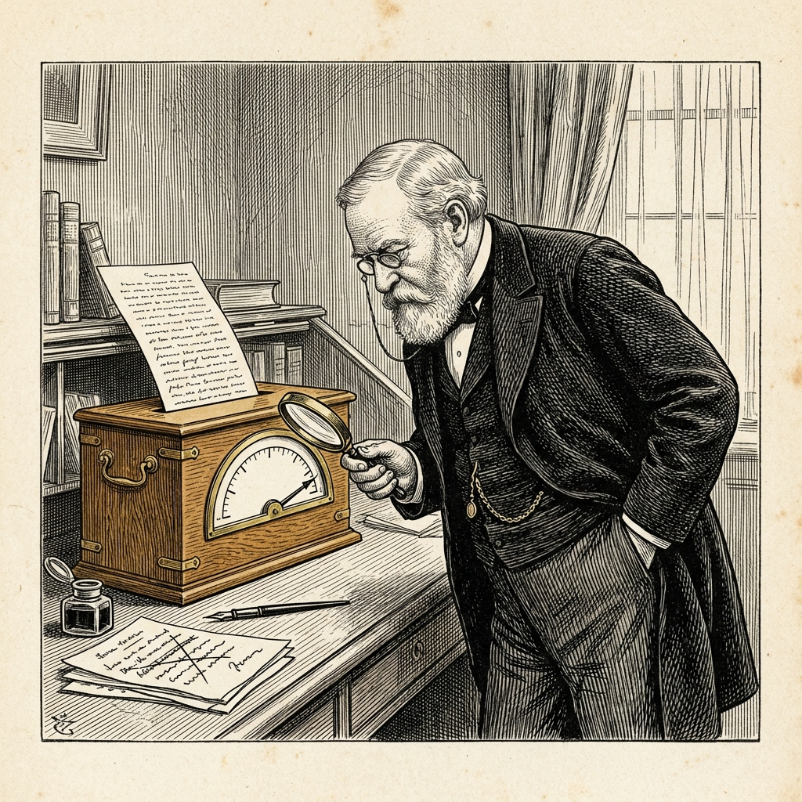

Ur N:r 2 1 oktober 2026
Omskrivning fälld som maskinens
Ingen mening densamma, domen densamma

Fabrikören Armin Ronacher har prövat Pangram, ett verktyg som söker avslöja maskinskriven text. Han lät först maskinen Opus 5 skriva en så kallad tweet i åtta stycken, högst 350 ord och i en viss herres stil. Pangram fann texten vara 100 procent AI.
Därpå läste fabrikören texten stycke för stycke och skrev om den utan maskinens hjälp. Strukturen och idéerna behöll han, och en språkmodell fick på slutet rätta stavfelen. Enligt vissa jämförelseverktyg är texterna omkring 50 procent lika. ”Men strängt taget är inte en enda mening densamma”, skriver Ronacher, som kallar resultatet ”100 procent mänskligt”.
”Även den här texten kommer tillbaka som 100 procent slop.” Ordet slop är fabrikörens eget. Pangrams egen sida säger att 100 procent av texten sannolikt är maskinskriven.
I en egen rapport om sin modell Pangram 4 uppger Pangram att mänsklig text felaktigt anklagas i 0,0041 procent av fallen och att maskintext missas i 0,3396 procent. Det rör sig här om ett enda försök med en enda text. Fabrikören är icke särskilt förvånad. Lånar man maskinens struktur, menar han, blir betyget dåligt även efter många ändringar. Till hans heder skall sägas att han uppskattar verktyget och lämnar öppet om domen kanske är rättvis.
Ortens språkvårdare har bett att få låna detektorn. De har, som bekant, aldrig behövt den.
Källa: Armin Ronacher, ”Interpreting Pangram”, 14 september 2026. Pangram Labs, ”Pangram 4 Technical Report”, 29 juli 2026.